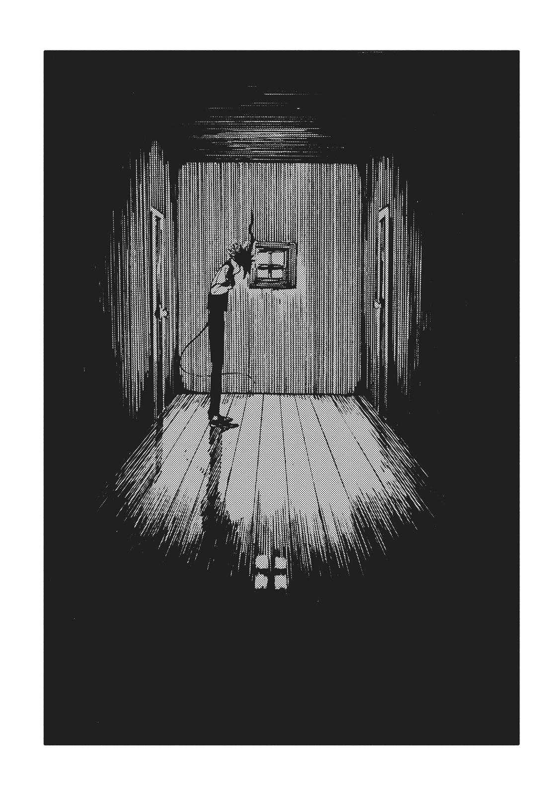
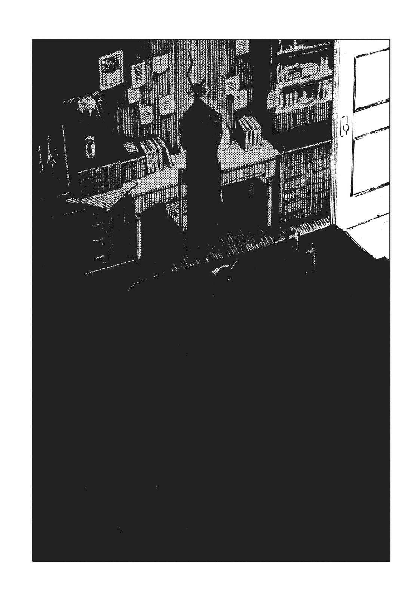
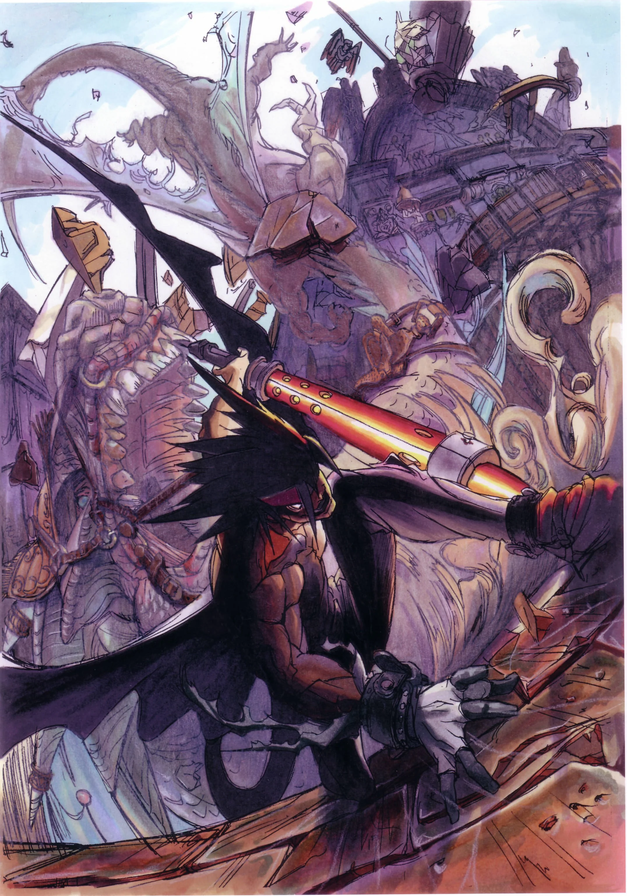
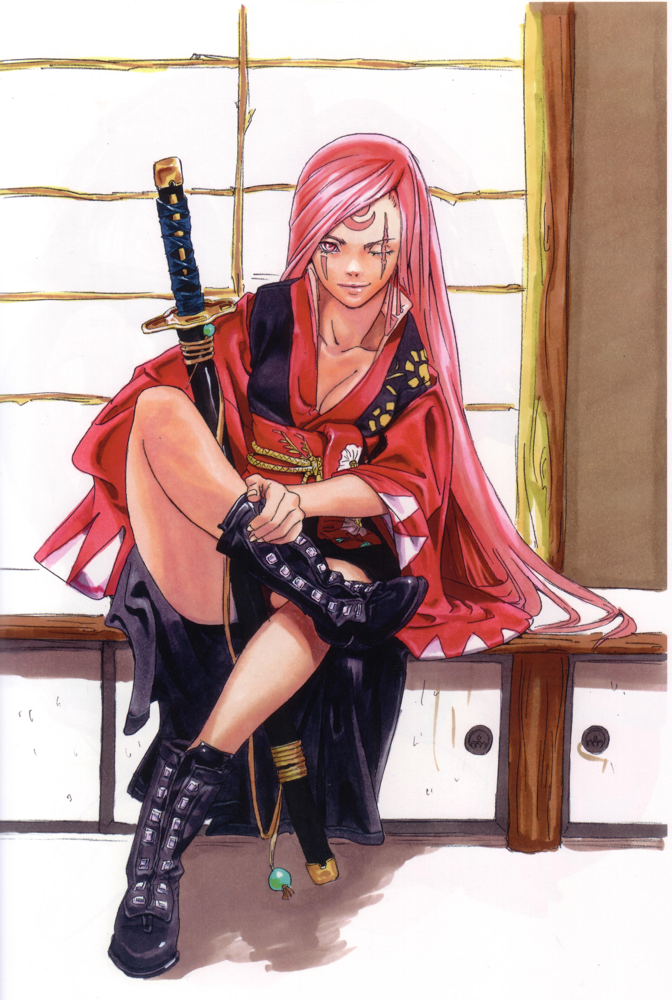
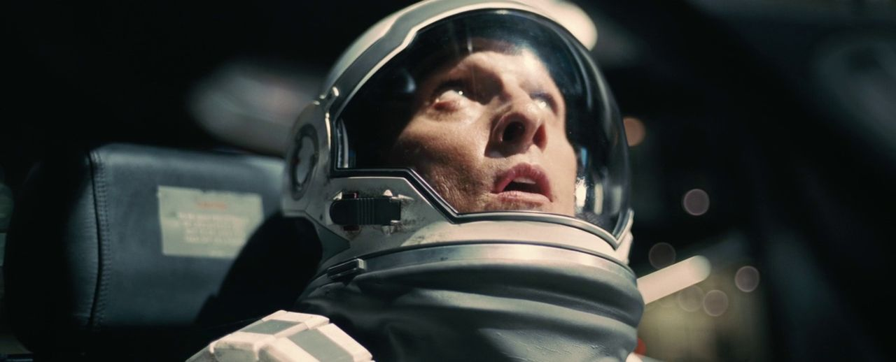
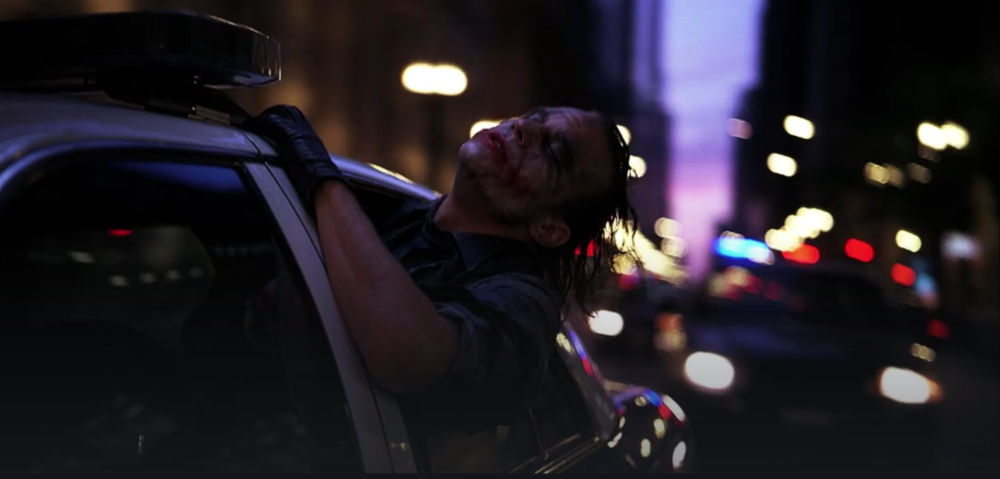

<!DOCTYPE html>
<html lang="en"></html>
<head>
    <meta charset="UTF-8">
    <title>Inspiration</title>
</head>
<body>
    <a href="../index.html">Home</a>
    <a href="inspiration.html">My Inspiration</a>
    <a href="../Top5s/topfive.html">Top 5s</a>

   <h1>My name is Garrett, and here are a few artists that inspire me</h1>
   <br>

   <h3><a href="https://twitter.com/mucknagabe">Nagabe</a></h3>
    
   <p>Manga author and artist most known for his manga series “The Girl from the Other Side.” Unique, soft, crude art style that resonates with me and is why the aforementioned series one of my all-time favorites. 
    <br>
    Uses shadows and light/dark in an interesting way, very effectively using negative space to make each of his drawings uniquely beautiful.</p>
   <br>
   <br>

   <h3><a href="https://guiltygear.fandom.com/wiki/Category:Artwork_by_Daisuke_Ishiwatari">Daisuke Ishiwatari</a></h3>
    
   <p>Game director, composer, artist, musician, and more of the of the Guilty Gear fighting game franchise, and creator of said series in 1998. Guilty Gear is a franchise known having a wild aesthetic, one that is championed by Daisuke himself, where he has become a legend in the world of fighting games. Much of the art and music in the series is a callback to rock-and-roll of the 70s and 80s, particularly Queen. The franchise has long been a success, with the most recent entry being one of the most popular currently on-going fighting games, most significantly due to his contributions to the series, which include the original game concept, official art and connecting, music composition, programming, and more. It is often joked that he makes the games entirely on his own. </p>
   <br>
   <br>

   <h3><a href="https://www.imdb.com/name/nm0634240/">Christopher Nolan</a></h3>
    
   <p>Film director and cinematographer known for grand cinematic experiences that stick to classic film-making, with as little use of computer graphics as possible. Nolan's direction style is one that has kept him in the elite tier of directors whose name alone can sell tickets. His films are all beautiful with real, powerful shots, and often uses massive amounts of resources and time to make intricate set pieces that nobody else would even attempt for scenes that may only be just one part of one of his works.</p>

</body>